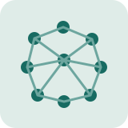
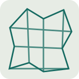

How can local controllers preserve global geometric intent without centralized coordination?
Hello — I’m Ray.
I study how simple local decisions can produce robust, explainable collective behavior.
I am an undergraduate at New York University, double-majoring in computer science and mathematics. My research spans learned robot-swarm morphogenesis, geometry-aware and set-based representations, and resource-efficient machine learning systems.
My long-term goal is to develop decentralized controllers that scale across robot counts and environments while remaining interpretable enough to diagnose, improve, and safely deploy.
How can we connect small interactions to collective success, failure, and recovery?
Selected work
Research
Projects that connect representation, learning, optimization, and interpretability.

Learned robot-swarm morphogenesis
Developing local controllers for homogeneous swarms that form, reconfigure, and recover global shapes using only neighborhood observations, including neural and graph cellular-automata approaches to decentralized coordination.

Geometry-aware and set-level encoding
Building compact representations for spatial and collection structure, including geometry-aware feature expansions and schema-agnostic dataset embeddings.
Interpretable collective intelligence
Studying how local observations and interactions accumulate into deformation, deadlock, successful recovery, and other system-level outcomes.
Resource-aware parallel optimization
Designing memory-aware scheduling and adaptive task packing for large biological workflows and resource-efficient machine learning systems.
Writing
Selected papers
Selected work across machine learning representations and resource-aware systems.
- AAAI · accepted
Parallel Scheduling and Optimization for Biological Workflows
Resource-aware orchestration for large genomic workflows.
- submitted
Random Voronoi Features and Networks for Geometry-Aware Feature Encoding
Fast, learning-free feature expansions that encode geometric structure.
- submitted
Dataset-Level Encoding for Fixed-Size Shared-Space Dataset Representations
Permutation-aware compression of collections into shared latent representations.
Background
Experience
A compact overview; the CV contains the complete details.
2026 — present
Research Assistant · Center for AI and Robotics, NYU
Decentralized formation control and learned morphogenesis for homogeneous robot swarms.
2025 — present
Research Assistant · AGI Lab, Stanford University
Geometry-aware feature maps, dataset-level embeddings, and tabular foundation models.
2024 — 2026
Research Assistant · Genetic Heritage Group, NYU
Population-scale microbiome analysis and causal bacteria-virus interaction discovery.
2025
AI Engineer Intern · Galatea Bio and Emerton Data
Resource-efficient biological workflows and low-resource reinforcement learning for language models.
2023 — 2027
B.S. candidate · New York University
Double major in computer science and mathematics.
Contact